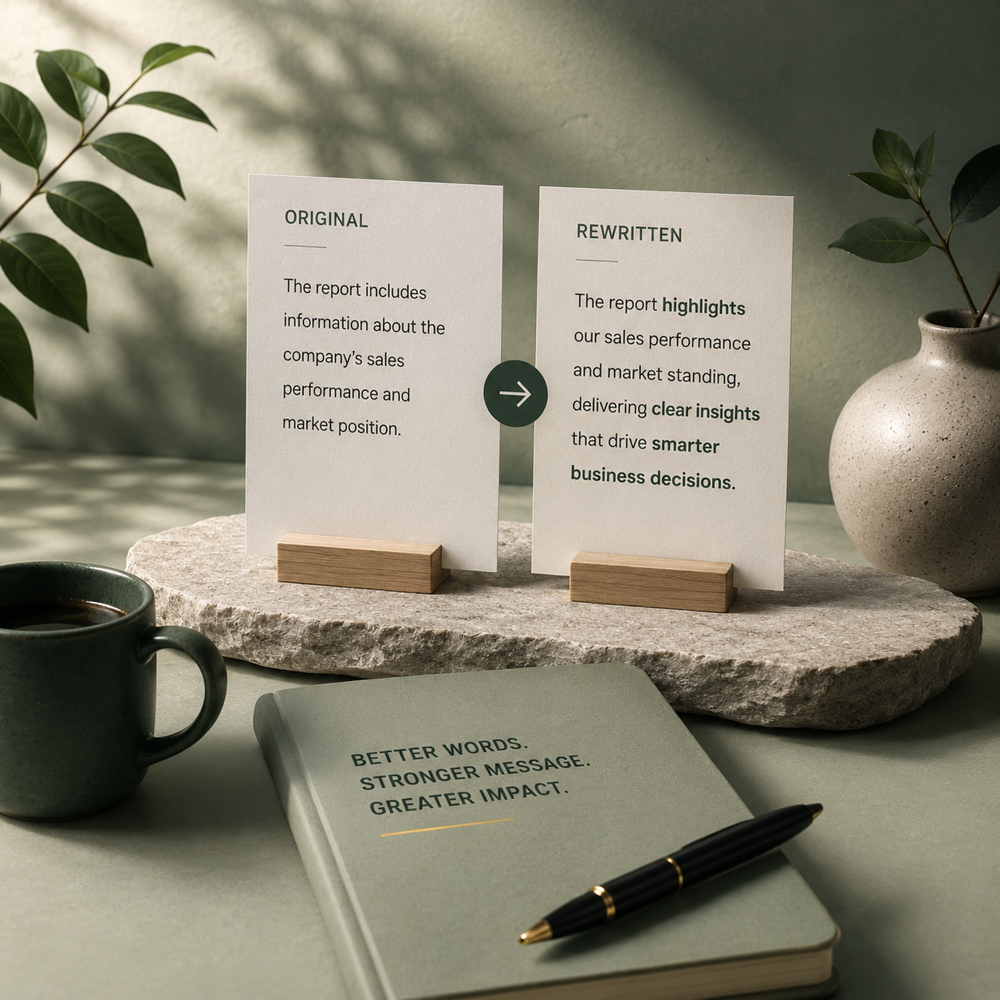
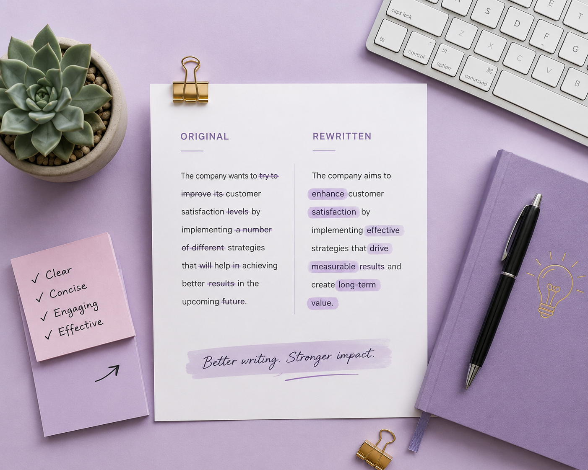

Rewriting is often misunderstood as changing words until the text looks different. That approach may produce a new surface, but it does not necessarily create better content.
Effective rewriting begins with understanding. The writer identifies what the original content is trying to communicate, what is working, what is weakening the message and what the reader needs from the final version.
What strategic rewriting actually means
Strategic rewriting reshapes existing content so that it performs its purpose more effectively. The original source may contain useful ideas but suffer from weak organization, repetitive language, unclear tone or outdated presentation.
Rewriting may improve:
- Sentence clarity and readability.
- Logical structure and information order.
- Tone and audience relevance.
- Originality and natural expression.
- SEO alignment and keyword integration.
- Persuasive impact and calls to action.
The goal is not to disguise the original. The goal is to communicate the same useful message in a stronger form.

Preserve the core message before changing the language
A successful rewrite protects the information the reader needs. Before editing, separate the content into three layers.
The central message
Identify the single most important idea. If the reader remembers only one thing, what should it be?
The supporting information
Determine which facts, examples, explanations or specifications make the message credible and complete.
The intended outcome
Understand what the content should help the reader think, feel or do after reading.
These elements become the boundaries of the rewrite. Structure and language may change, but the essential purpose remains stable.
A rewrite succeeds when the message becomes easier to understand, not merely harder to recognize.
Improve clarity by rebuilding the structure
Many weak drafts contain good information in the wrong order. Rewriting creates a clearer path through that information.
Lead with the most relevant point
Avoid introductions that delay the value. Begin with the problem, benefit, question or insight that matters most to the audience.
Give each paragraph one purpose
Paragraphs become difficult to follow when several unrelated ideas compete inside them. Divide and reorganize when necessary.
Strengthen transitions
Make the relationship between ideas visible. Explain whether the next section adds detail, presents a contrast, provides evidence or moves toward a conclusion.
Remove repetition
Repeated ideas may appear in different wording. Keep the strongest version and remove anything that does not add value.

Create genuine originality instead of replacing words
Synonym replacement is not meaningful paraphrasing. A sentence can use different words and still preserve the same awkward structure.
Change the perspective
Reframe the information around the audience’s needs, a practical outcome or a clearer logical sequence.
Rebuild the sentence
Combine, divide or reorder ideas instead of matching the original sentence word by word.
Use natural terminology
Choose the words a real reader would expect in the subject area. Unusual synonyms can make the rewrite sound less natural.
Add useful clarity
A rewrite may include a short explanation, example or transition when the original assumes too much knowledge.
Remove unnecessary complexity
Simpler language is often stronger when it communicates the same idea accurately.
A practical rewriting and paraphrasing process
1. Read the source without editing
Understand the argument, audience, tone and required facts before changing anything.
2. Create a message outline
Reduce the source to its central idea, supporting points and intended outcome.
3. Reorganize the information
Place ideas in the order that best serves the reader rather than following the source automatically.
4. Rewrite from the outline
Draft the new version from your understanding instead of rewriting sentence by sentence.
5. Compare for accuracy
Check the rewrite against the source to confirm that important facts and conditions remain correct.
6. Edit for voice and readability
Refine sentence rhythm, tone, terminology, transitions and formatting.
7. Perform a final originality review
Confirm that the final content has its own natural structure and does not simply imitate the source with replacement words.
Final rewriting quality checklist
Meaning
Does the rewrite preserve the essential message?
Accuracy
Are facts, claims and conditions still correct?
Structure
Does the information follow a clearer logical order?
Originality
Has the content been genuinely rebuilt rather than reworded?
Audience fit
Is the tone appropriate for the intended reader?
Readability
Is the final version easy to scan and understand?
Strong rewriting does not erase the original value. It reveals that value more clearly, naturally and effectively.